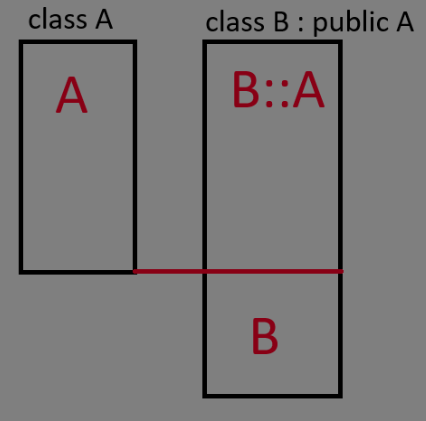

Heterogén tárolók
A heterogén kollekciók lényege az, hogy többféle típusú elemeket tárolhatunk egy tárolóban. Erre sokféle módszer létezik, most a legegyszerűbb formáját nézzük meg.
Polimorphism by inheritance
Az öröklés alapú polimorfizmus alapja az előző fejezetben is említett örökléses memóriakép: 
Ezen láthatjuk, hogy egy struct B : A osztály egy példánya egyben egy A osztály példánya is, ezért A típusra mutató pointer/referencia mutathat B példányra is.
Ezek alapján készíthetünk egy olyan tárolót, amely egy adott típusból leszármazó objektumokra mutató pointereket tárol. Az ilyen tárolókat hívjuk heterogén kollekciónak.
Ownership kérdés: Egy heterogén kollekció esetén két opciónk van:
- A kollekció birtokolja a tárolt objektumokat. Ez azt jelenti, hogy a kollekció élettartama végén fel kell szabadítania a tárolt elemeket.
- A kollekció nem birtokolja az elemeket, ekkor a felhasználó feladata az elemek felszabadítása.
Heterogén kollekciók esetén általában az első opciót választjuk.
Heterogén kollekció konstrukciója
Tároljunk "komponens"eket, amelyeknek van egy virtuális use() tagfüggvénye.
Szükségünk lesz:
* Valamilyen Component* tömbre
* Méretet tároló egészre
* hozzáadó tagfüggvényre
* indexelő operátorra
* destruktorra
* másoló konstruktorra és értékadó operátorra(vagy ha nem kell, akkor priváttá tesszük ezeket, C++11 -től = delete; is jó)
Az első két pontot egyesíthetjük egy std::vector<Container*> használatával(C++ standard library dinamikus tömbje), vagy egy saját dinamikus tömb implementációval. (ld. előző fejezet)
A hozzáadó tagfüggvényünk egy Container*-ot vesz át, amit a hívó fél a new operátor visszatérési értékeként kapott. Ez a függvény "átveszi a birtokos szerepét"(takes ownership) a hívótól. Ezt érdemes kommentként jelezni.
#include <cstdint>
#include <vector>
#include <iostream>
struct Component{
virtual void use() = 0;
virtual ~Component() = default;
};
struct SomeComponent : Component{
SomeComponent(int gears) : gears(gears) {}
int gears;
virtual void use() override{
fixSimpleMachine();
}
void fixSimpleMachine() {
std::cout << "fixed simple machine, gears: " << gears << '\n';
}
virtual ~SomeComponent() = default;
};
struct ComponentStore{
ComponentStore() = default;
std::size_t size() const { return components.size(); }
void push_back(Component* component) {
components.push_back(component);
}
Component* operator[](std::size_t idx){
return components[idx];
}
~ComponentStore(){
for(size_t i = 0; i < size(); i++){ //range based for ciklus, ld. iterátorok
delete components[i];
}
}
private:
ComponentStore(const ComponentStore&);
ComponentStore& operator=(const ComponentStore&);
std::vector<Component*> components;
};
int main(){
ComponentStore components;
components.push_back(new SomeComponent(5));
components[0]->use();
}
Kitérő: std::unique_ptr (C++11 -től)
<memory> header
Note
Ez a fejezet túlmutat a tárgy anyagán. A unqiue_ptr komolyabb használatához sokszor szükségesebb bonyolultabb koncepciók, amelyeket a jegyzet végén "kitérő" fejezetekben tárgyal.
Gyakran szeretnénk egy dinamikusan foglalt objektumot valamilyen másik objektum élettartamához kötni. Erre az esetre létezik egy pointert csomagoló std::unique_ptr osztály. Ugyanúgy működik, mint egy pointer, van * és -> operátora, viszont a unique_ptr objektum élettartama végén felszabadítja a tárolt pointert. Nem másolható(hiszen "unique"), ezzel biztosítja, hogy egyszerre csak egy objektum birtokolja a memóriát, amire mutat. Referencia paraméterként természetesen átvehető, ez nem okoz másolást.
A unqiue_ptr-hez az std::make_unique függvénnyel tudunk objektumot foglalni. Amit paraméterként adunk neki, azt továbbadja az objektum konstruktorának.
Emellett a uniqure_ptr konstruktora kaphat már lefoglalt objektumra mutó pointert is.
std::unique_ptr<Foo> p = std::make_unique<Foo>(3, "bar"); //Foo* p = new Foo(3, "bar")
Foo* f = new Foo(2, "asd");
std::unqiue_ptr<Foo> p2(f); //p2 takes ownership of f, so delete f; is not necessary
unique_ptr -el átírva a heterogén kollekciónkat:
struct ComponentStore{
ComponentStore() = default;
std::size_t size() const { return components.size(); }
void push_back(Component* component) {
components.push_back(std::unique_ptr<Component>(component));
}
std::unique_ptr<Component>& operator[](std::size_t idx){
return components[idx];
}
~ComponentStore() = default;
private:
ComponentStore(const ComponentStore&);
ComponentStore& operator=(const ComponentStore&);
std::vector<std::unique_ptr<Component>> components;
};
unqiue_ptr destruktora pedig felszabadítja a memóriát.